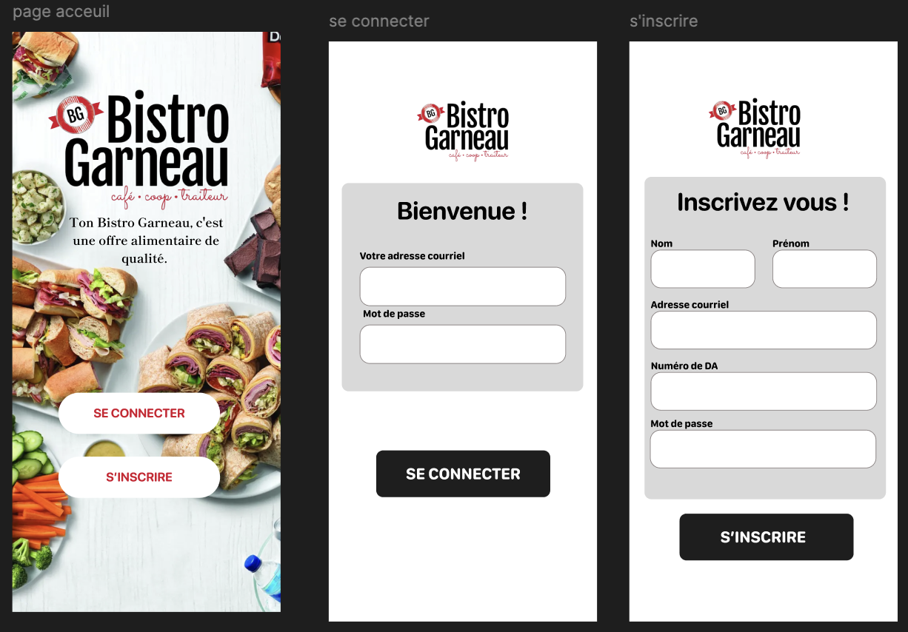

Saad Belhaj
Étudiant en Techniques de l’informatique au Cégep Garneau
Je développe des applications web, mobiles et desktop, avec un intérêt marqué pour le développement logiciel, le support technique et les solutions concrètes pour les utilisateurs.
À propos
Pourquoi moi ?
Un profil en formation, mais déjà centré sur la qualité d’exécution, l’autonomie et la valeur livrée aux utilisateurs.
Mon parcours en Techniques de l’informatique au Cégep Garneau me permet de toucher autant au développement web qu’au logiciel, au mobile, aux bases de données et aux réseaux. J’aime construire des applications bien structurées, relier la logique métier à une interface claire et transformer un besoin concret en solution fonctionnelle.
Je me démarque par une approche sérieuse, curieuse et autonome. Mes projets scolaires et personnels me donnent déjà une base pratique solide, tandis que mon expérience en environnement technique et en service à la clientèle renforce ma communication, mon sens des priorités et ma capacité à résoudre des problèmes réels.
Formation appliquée
Des projets qui couvrent déjà le web, le desktop, le mobile et les bases de données.
Rigueur technique
Code structuré, logique orientée objet, tests et souci de maintenabilité.
Vision utilisateur
Je vise des solutions concrètes, simples à utiliser et réellement utiles au terrain.
Autonomie professionnelle
Je suis à l’aise pour apprendre vite, documenter, déboguer et collaborer efficacement.
Compétences techniques
Un socle polyvalent, organisé par domaine
Mes compétences couvrent le développement applicatif, les interfaces, les bases de données et les outils utilisés en contexte professionnel.
Langages
C#
Java
Python
JavaScript
SQL
HTML / CSS
Développement web
Flask
ASP.NET Core
Razor Pages
API REST
Authentification
Sessions
Blueprints
CRUD
Développement logiciel
WPF
MVVM
POO
Structures de données
Tests unitaires
Mobile
Flutter
Android Studio
Firebase
GeoFire
Base de données
MySQL
Oracle SQL
MongoDB
Entity Framework
Outils
Git / GitHub
Docker
Visual Studio
VS Code
Xcode
Postman
Cisco Packet Tracer
Projets
Des projets concrets qui montrent ce que je sais livrer
Chaque projet présente le contexte, les technologies utilisées, ma contribution et les apprentissages tirés du travail réalisé.

Application mobile de commande pensée pour la cafétéria du cégep, avec un parcours utilisateur rapide, clair et orienté action.
Flutter
Android Studio
Architecture mobile
Ce que j’ai fait
Conception des écrans, structuration du flux de commande et intégration de la logique applicative mobile.
Ce que j’ai appris
Architecture d’application mobile, cohérence UX et gestion d’un parcours utilisateur complet.
Expérience
Une base réelle en environnement technique et orienté utilisateur
Même au-delà du développement pur, mes expériences renforcent ma capacité à communiquer, diagnostiquer et résoudre efficacement.
Technicien en informatique — MRNF
- Soutien aux utilisateurs et traitement des demandes techniques.
- Diagnostic de problèmes logiciels, matériels ou liés à l’environnement de travail.
- Participation au débogage, à l’analyse et au suivi des incidents.
- Collaboration avec l’équipe pour maintenir un service fiable et structuré.
Analyste de base de données — MAPAQ
- Analyser les données de la MAPAQ dans différents base de données.
- Transformer les bases de données d'excel et access à PostgreSQL.
- Assurer la migration des données correctement d'une base de donné à une autre.
- Trouver une solution ppur pouvoir utiliser la base de donné PostgreSQL avec PowerBi.
Expérience orientée client
- Communication claire avec des utilisateurs aux besoins variés.
- Priorisation rapide des demandes et gestion professionnelle des échanges.
- Recherche de solutions concrètes avec un souci de qualité de service.
- Développement d’un bon réflexe d’écoute et d’accompagnement.
Travail d’équipe et livraison technique
- Analyse de besoins, conception et réalisation de projets fonctionnels.
- Utilisation de Git, documentation technique et organisation du travail.
- Tests, débogage et amélioration continue des fonctionnalités développées.
- Présentation de solutions et justification des choix techniques retenus.
Formation
Une progression structurée vers le développement logiciel
Mon parcours combine théorie, pratique et projets appliqués dans des contextes variés.
Programme
Techniques de l’informatique — Cégep Garneau
Formation axée sur la programmation, le développement web, les bases de données, les réseaux, la sécurité et le développement mobile.
Cours pertinents
Programmation avancée
Développement web
Bases de données
Réseaux
Sécurité
Développement mobile
Support technique
Approfondissement des bases de diagnostic, du service utilisateur et des méthodes de résolution.
Web et sécurité
Travail continu sur l’authentification, les sessions, les API et la protection des accès.
Outils professionnels
Veille sur Git, Docker, Postman et les pratiques de développement plus structurées.
J’apporte
- Une base technique déjà concrète sur plusieurs plateformes.
- Une approche sérieuse, autonome et orientée solution.
- Une capacité à apprendre vite et à livrer avec méthode.
CV
Télécharger mon CV
Une version téléchargeable est disponible pour un accès rapide à mon profil, mes projets et mes compétences techniques.
Contact
Parlons d’une opportunité ou d’un projet
Je suis ouvert aux opportunités de stage, d’emploi étudiant et de collaboration sur des projets techniques.